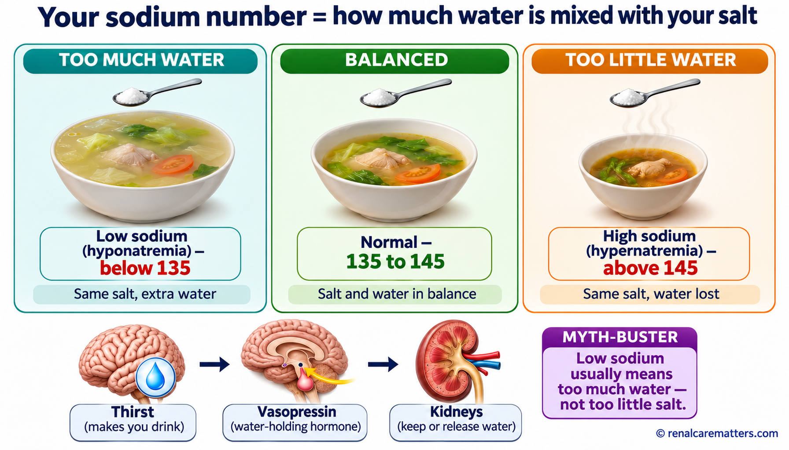
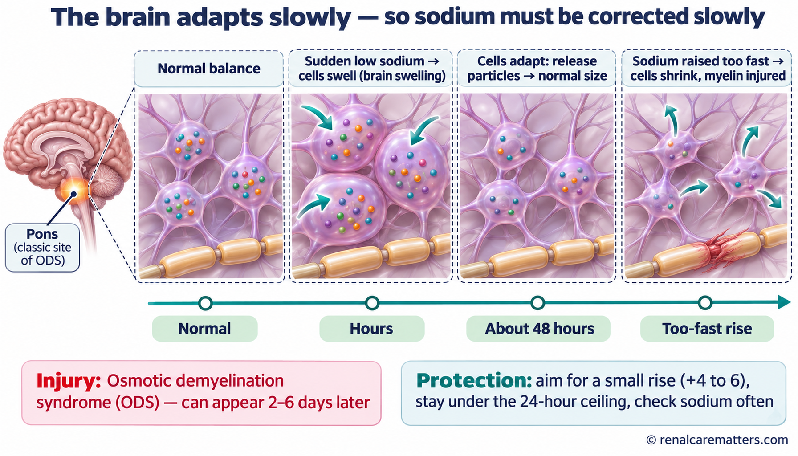
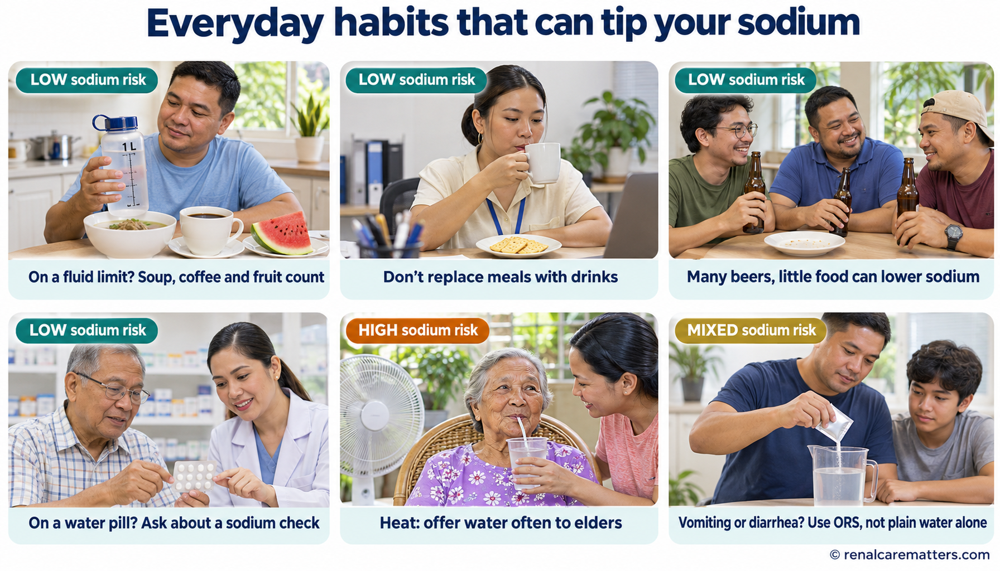
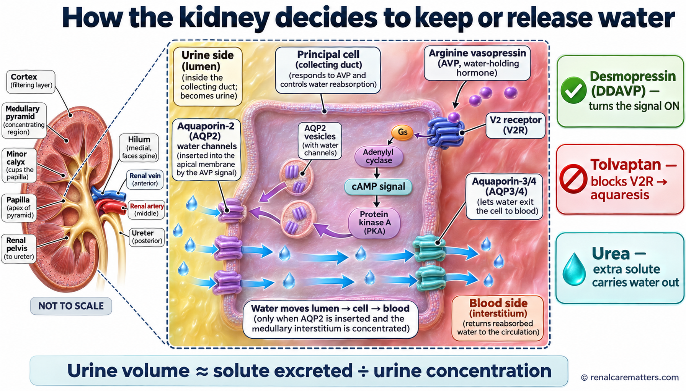
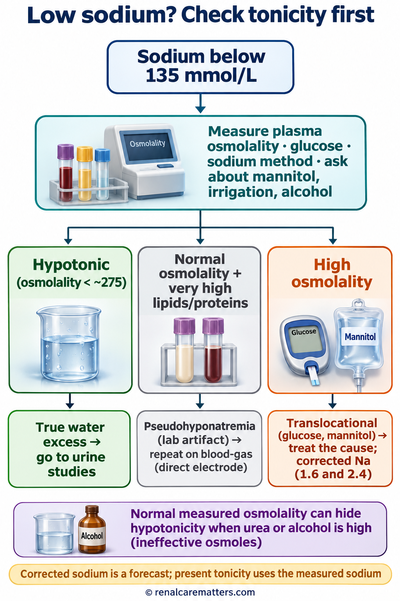
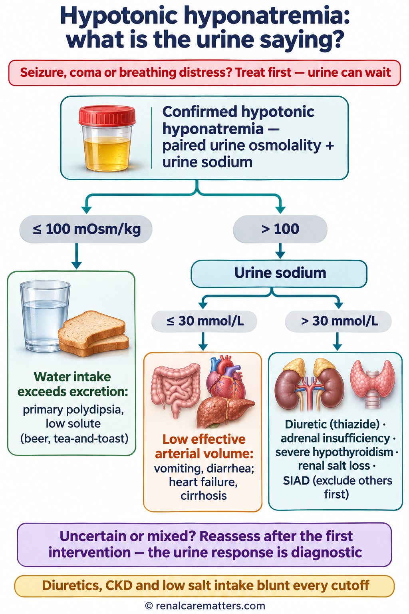
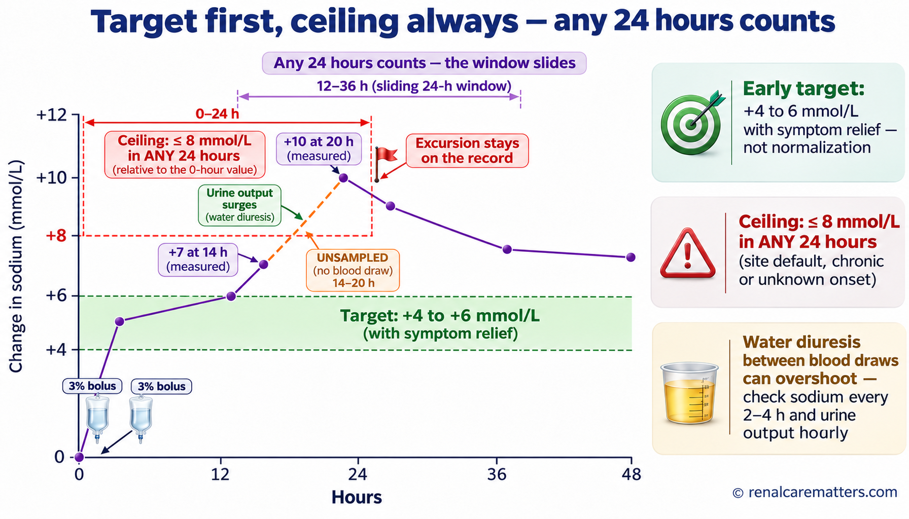
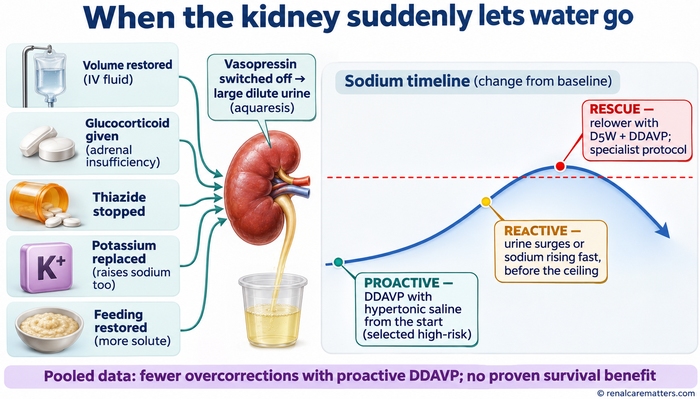
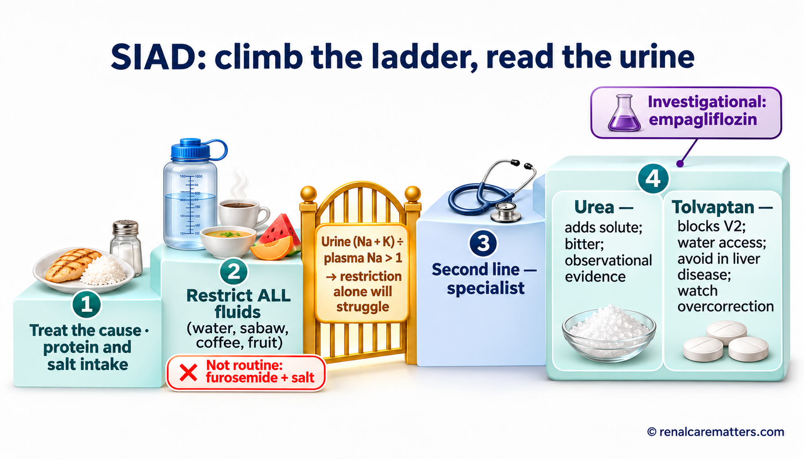
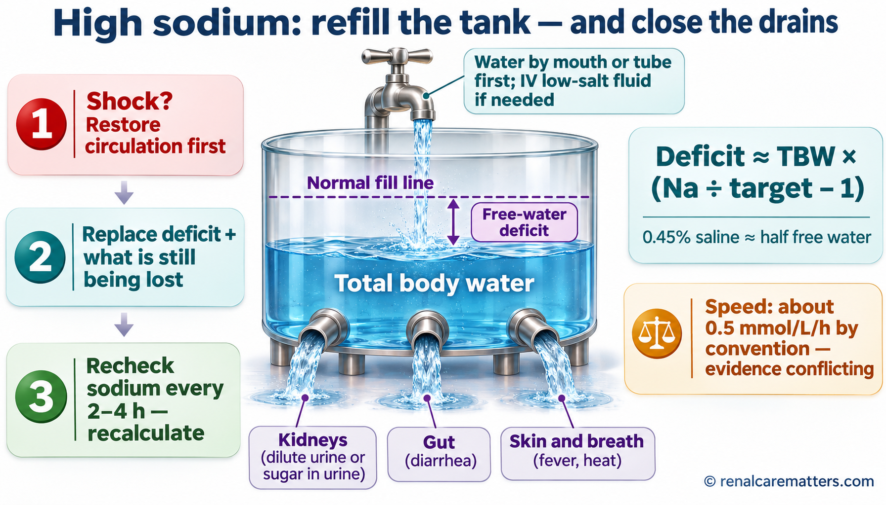

Go to the emergency room now if someone with a sodium problem, or with heavy vomiting, diarrhea, or very little to drink, has:Pumunta agad sa emergency room kung ang taong may problema sa sodium, o may matinding pagsusuka, pagtatae, o halos walang naiinom, ay may:Adto dayon sa emergency room kung ang tawo nga adunay problema sa sodium, o grabe ang pagsuka, pagkalibang, o halos walay mainom, adunay:Munta ka agad king emergency room nung ing tau a atin problema king sodium, o malala ing pamagsuka, pamagtai, o ala neng mainum, atin:
- A seizure (fit, kombulsyon), or cannot be woken up properlyKombulsyon (seizure), o hindi magising nang maayosKombulsyon (seizure), o dili mapukaw og maayoKombulsiyun (seizure), o e mapukaw ayus
- New confusion, very strange behavior, or extreme sleepinessBagong pagkalito, kakaibang kilos, o sobrang antokBag-ong kalibog, katingad-an nga lihok, o grabe nga katulgonBayung pamagkalitu, aliwang kilus, o sobrang ditak
- Repeated vomiting with headache, or trouble breathingPaulit-ulit na pagsusuka na may sakit ng ulo, o hirap humingaBalik-balik nga pagsuka nga adunay sakit sa ulo, o lisod moginhawaPaulit-ulit a pamagsuka kayabe ing sakit buntuk, o kasakitan king pamanginga
- Fainting, a very fast heartbeat, or cold, clammy skin after losing a lot of fluidPagkahimatay, napakabilis na tibok ng puso, o malamig at malagkit na balat matapos mawalan ng maraming likidoPagkaluya, paspas kaayo nga pitik sa kasingkasing, o bugnaw ug malagkit nga panit human mawad-an og daghang tubig sa lawasPamaglupasay, mabilis a pitik ning pusu, o malamig at malagkit a balat kaibat ning pamanyaga dakal a danum king katawan
- Sudden weakness, trouble speaking or swallowing a few days after a low sodium was treatedBiglaang panghihina, hirap magsalita o lumunok ilang araw matapos gamutin ang mababang sodiumKalit nga kaluya, lisod mosulti o motulon pipila ka adlaw human matambalan ang ubos nga sodiumBiglang kaluya, kasakitan king pamagsalita o pamanlunuk pilan aldo kaibat gamutan ing mababang sodium
Bring every medicine and supplement bottle, and the latest blood results. Do not try to fix a sodium level at home by drinking salt water or large amounts of water.Dalhin ang lahat ng bote ng gamot at supplement, at ang pinakabagong resulta ng dugo. Huwag subukang ayusin ang sodium sa bahay sa pag-inom ng tubig-alat o napakaraming tubig.Dad-a ang tanang botelya sa tambal ug supplement, ug ang pinakabag-ong resulta sa dugo. Ayaw sulayi pag-ayo sa sodium sa balay pinaagi sa pag-inom og tubig-asin o daghan kaayong tubig.Dalan ing eganagang bote ning gamut at supplement, at ing pekabayung resulta ning daya. Eme subukan ayusan ing sodium king bale king pamanginum danum-asin o dakal a danum.
The one-minute answerAng sagot sa isang minutoAng tubag sa usa ka minutoIng sagot king metung a minutu
- Your blood sodium number tells you how much water is mixed with your body’s salt — not how much salt you ate.Sinasabi ng numero ng sodium sa dugo kung gaano karaming tubig ang nakahalo sa asin ng katawan — hindi kung gaano karaming asin ang kinain mo.Ang numero sa sodium sa dugo nagsulti kung pila ka tubig ang nasagol sa asin sa lawas — dili kung pila ka asin ang imong gikaon.Ing numeru ning sodium king daya sasabian na nung pilan a danum ing mekalaku king asin ning katawan — e nung pilan a asin ing apangan mu.
- Low sodium (below 135) usually means too much water for the salt. High sodium (above 145) usually means too little water.Ang mababang sodium (mas mababa sa 135) ay kadalasang sobrang tubig para sa asin. Ang mataas na sodium (higit 145) ay kadalasang kulang sa tubig.Ang ubos nga sodium (ubos sa 135) kasagaran sobra nga tubig para sa asin. Ang taas nga sodium (labaw sa 145) kasagaran kulang sa tubig.Ing mababang sodium (mababa king 135) kalimitan sobrang danum para king asin. Ing matas a sodium (lagpas 145) kalimitan kulang a danum.
- The brain is the organ that feels the change. A sudden change is dangerous; a slow one gives the brain time to adjust.Ang utak ang nakararamdam ng pagbabago. Mapanganib ang biglaang pagbabago; ang mabagal ay nagbibigay ng oras sa utak na umangkop.Ang utok ang mobati sa kausaban. Delikado ang kalit nga kausaban; ang hinay naghatag og panahon sa utok sa pag-adjust.Ing utak ing makaramdam king pamagbayu. Delikadu ing biglang pamagbayu; ing mabagal mibie panaun king utak ban mag-adjust.
- That is why doctors fix a long-standing low sodium slowly on purpose and check your blood often — going too fast can injure the brain.Kaya sinasadyang dahan-dahan ng doktor ang pag-ayos ng matagal nang mababang sodium at madalas kayong kinukuhanan ng dugo — ang sobrang bilis ay maaaring makapinsala sa utak.Mao nga tinuyo nga hinay ang doktor sa pag-ayo sa dugay na nga ubos nga sodium ug kanunay mokuha og dugo — ang sobra kapaspas makadaot sa utok.Yamu ita ing doktor sadyang mabagal king pamag-ayus king maluat nang mababang sodium at masalese kuang daya — ing sobrang bilis malyaring makasira king utak.
- Most treatment is about finding and fixing the cause: a medicine, vomiting or diarrhea, heart, liver, kidney or hormone problems, or eating too little.Ang karamihan ng gamutan ay paghanap at pag-ayos ng sanhi: gamot, pagsusuka o pagtatae, problema sa puso, atay, bato o hormone, o kulang na pagkain.Ang kadaghanan sa pagtambal mao ang pagpangita ug pag-ayo sa hinungdan: tambal, pagsuka o pagkalibang, problema sa kasingkasing, atay, bato o hormone, o kulang nga pagkaon.Ing kayaliwan ning gamutan pamanintun at pamag-ayus king sanhi: gamut, pamagsuka o pamagtai, problema king pusu, ate, batu o hormone, o kulang a pamangan.
What your sodium number really measuresAno talaga ang sinusukat ng numero ng sodiumUnsa gyud ang gisukod sa numero sa sodiumNanu talaga ing susukatan ning numeru ning sodium
Think of your body as a large pot of sabaw. The salt in the soup (mostly sodium) stays fairly constant, but the amount of water can change from hour to hour. Your blood test does not count the grains of salt; it tastes how concentrated the soup is. Add too much water and the soup tastes bland — the sodium number falls. Let the water boil off and the soup becomes salty — the number rises. This is why a person can have a low sodium while eating plenty of salt, and a high sodium without eating any extra.Isipin ang katawan mo bilang malaking kaldero ng sabaw. Ang asin sa sabaw (karamihan ay sodium) ay halos hindi nagbabago, pero ang dami ng tubig ay nagbabago kada oras. Hindi binibilang ng blood test ang butil ng asin; tinitikman nito kung gaano kalapot o katabang ang sabaw. Kapag sobra ang tubig, matabang ang sabaw — bumababa ang numero ng sodium. Kapag kumulo at nawala ang tubig, umaalat ang sabaw — tumataas ang numero. Kaya puwedeng mababa ang sodium kahit maalat ang kinakain, at mataas kahit walang dagdag na asin.Hunahunaa ang imong lawas isip dakong kaldero sa sabaw. Ang asin sa sabaw (kasagaran sodium) halos dili mausab, apan ang gidaghanon sa tubig mausab matag oras. Ang blood test dili moihap sa mga lugas sa asin; tilawan niini kung unsa ka parat o katab-ang ang sabaw. Kung sobra ang tubig, tab-ang ang sabaw — mous-os ang numero sa sodium. Kung mobukal ug mawala ang tubig, mopait ang sabaw — mosaka ang numero. Mao nga mahimong ubos ang sodium bisan parat ang gikaon, ug taas bisan walay dugang asin.Isipan me ing katawan mu antimong maragul a kaldero ning sabaw. Ing asin king sabaw (kayaliwan sodium) e masyadung mibabayu, oneng ing kakaldugan ning danum mibabayu balang oras. Ing blood test e na bibilangan ing butil ning asin; titikman na nung makanung alat o tabang ing sabaw. Nung sobra ing danum, tabang ya ing sabaw — mababa ing numeru ning sodium. Nung milutu at mewala ing danum, mamaalat ya ing sabaw — matas ing numeru. Yamu ita malyaring mababa ing sodium kahit maalat ing pamangan, at matas kahit ala yang dagdag asin.

Blood sodium works like the taste of soup: the same salt with more water reads low, and with less water reads high. Thirst, the water-holding hormone vasopressin, and the kidneys keep the balance.Ang sodium sa dugo ay parang lasa ng sabaw: parehong asin pero mas maraming tubig ay mababa ang basa, at mas kaunting tubig ay mataas. Ang uhaw, ang hormone na vasopressin na nagpapanatili ng tubig, at ang mga bato ang nagbabalanse.Ang sodium sa dugo sama sa lami sa sabaw: parehas nga asin apan mas daghang tubig ubos ang basa, ug mas gamay nga tubig taas. Ang kauhaw, ang hormone nga vasopressin nga motipig sa tubig, ug ang mga bato ang nagbalanse.Ing sodium king daya antimo ing lasa ning sabaw: pareung asin oneng mas dakal a danum mababa ing basa, at mas kaunting danum matas. Ing pangauhaw, ing hormone a vasopressin a mamanatili king danum, at deng batu ing mamalanse.
- AVP
- Arginine vasopressin, the water-holding hormone
- Na
- Sodium
Three systems keep the number steady. Thirst makes you drink when the soup gets salty. A brain hormone called arginine vasopressin (AVP) — also called antidiuretic hormone — tells the kidneys to hold on to water. And the kidneys can pour out dilute urine when you drink a lot, or save water when you drink little. Problems start when one of these is switched on when it should be off, switched off when it should be on, or when you cannot reach water or cannot stop drinking it.Tatlong sistema ang nagpapanatili ng numero. Ang uhaw ay nagpapainom sa iyo kapag umaalat ang sabaw. Ang hormone sa utak na arginine vasopressin (AVP) — tinatawag ding antidiuretic hormone — ay nag-uutos sa bato na itago ang tubig. At ang mga bato ay naglalabas ng matubig na ihi kapag marami kang nainom, o nagtitipid ng tubig kapag kaunti. Nagkakaproblema kapag ang isa sa mga ito ay nakabukas kahit dapat sarado, sarado kahit dapat bukas, o kapag hindi ka makaabot ng tubig o hindi mapigilang uminom.Tulo ka sistema ang nagpabilin sa numero. Ang kauhaw mopainom nimo kung mopait ang sabaw. Ang hormone sa utok nga arginine vasopressin (AVP) — gitawag usab nga antidiuretic hormone — nagsugo sa bato nga tipigan ang tubig. Ug ang mga bato makapagawas og matubig nga ihi kung daghan kag nainom, o motipig og tubig kung gamay. Mosugod ang problema kung ang usa niini naka-on bisan angay naka-off, naka-off bisan angay naka-on, o kung dili ka makaabot og tubig o dili mapugngan ang pag-inom.Atlu a sistema ing mamanatili king numeru. Ing pangauhaw papainum na ka nung mamaalat ing sabaw. Ing hormone king utak a arginine vasopressin (AVP) — aus da muring antidiuretic hormone — mamaus king batu ban itagu ing danum. At deng batu malyaring mamalwal matubig a ihi nung dakal ing ainum mu, o mangimut danum nung kaunti. Mitatagun ing problema nung metung karening makabuklat kahit dapat makasara, makasara kahit dapat makabuklat, o nung e ka makaabut danum o e mapigilan ing pamanginum.
Low sodium (hyponatremia): too much water for the saltMababang sodium (hyponatremia): sobrang tubig para sa asinUbos nga sodium (hyponatremia): sobra nga tubig para sa asinMababang sodium (hyponatremia): sobrang danum para king asin
Hyponatremia means a blood sodium below 135 mmol/L. It is the most common salt-and-water problem in hospitals, especially in older adults. A mild, slowly developing low sodium may cause only tiredness, poor concentration, unsteady walking, or falls — symptoms easily blamed on age. A sodium that drops quickly, within a day or two, can make the brain swell inside the skull and cause headache, vomiting, confusion and seizures.Ang hyponatremia ay sodium sa dugo na mas mababa sa 135 mmol/L. Ito ang pinakakaraniwang problema sa asin at tubig sa ospital, lalo na sa matatanda. Ang banayad at mabagal na pagbaba ay maaaring magdulot lang ng pagod, hirap mag-concentrate, pagsuray, o pagkadapa — mga sintomas na madalas isisi sa edad. Ang sodium na bumagsak nang mabilis, sa loob ng isa o dalawang araw, ay maaaring magpamaga sa utak sa loob ng bungo at magdulot ng sakit ng ulo, pagsusuka, pagkalito at kombulsyon.Ang hyponatremia mao ang sodium sa dugo nga ubos sa 135 mmol/L. Kini ang labing kasagaran nga problema sa asin ug tubig sa ospital, labi na sa mga tigulang. Ang hinay ug hinay-hinay nga pag-us-os mahimong mohatag lang og kakapoy, lisod mag-concentrate, pagsuray, o pagkapukan — mga sintomas nga sayon ibasol sa edad. Ang sodium nga paspas nga mous-os, sulod sa usa o duha ka adlaw, makapahubag sa utok sulod sa bagolbagol ug mohatag og sakit sa ulo, pagsuka, kalibog ug kombulsyon.Ing hyponatremia sodium king daya a mababa king 135 mmol/L. Iti ing pekakaraniwan a problema king asin at danum king ospital, lalu na king matua. Ing banayad at mabagal a pamababa malyaring mamye pamikapagal, kasakitan king pamag-concentrate, pamagsuray, o pamagkalabu — sintomas a kalimitan isisi king edad. Ing sodium a mibagsak mabilis, king lub ning metung o adwang aldo, malyaring pamagan ing utak king lub ning bungo at mamye sakit buntuk, pamagsuka, pamagkalitu at kombulsiyun.
Common causes, in everyday words:Karaniwang sanhi, sa simpleng salita:Kasagarang hinungdan, sa simple nga pulong:Karaniwang sanhi, king simpling amanu:
- Water pills (thiazide diuretics) such as hydrochlorothiazide or indapamide, often for blood pressure.Water pills (thiazide diuretics) gaya ng hydrochlorothiazide o indapamide, madalas para sa altapresyon.Water pills (thiazide diuretics) sama sa hydrochlorothiazide o indapamide, kasagaran para sa altapresyon.Water pills (thiazide diuretics) antimo ing hydrochlorothiazide o indapamide, kalimitan para king altapresyun.
- Some medicines for mood, seizures, pain or cancer (certain antidepressants, carbamazepine, some chemotherapy) that switch on the water-holding hormone.Ilang gamot para sa mood, kombulsyon, sakit o kanser (ilang antidepressant, carbamazepine, ilang chemotherapy) na nagpapagana sa hormone na nagtatago ng tubig.Pipila ka tambal para sa mood, kombulsyon, sakit o kanser (pipila ka antidepressant, carbamazepine, pipila ka chemotherapy) nga mopaandar sa hormone nga motipig sa tubig.Pilan a gamut para king mood, kombulsiyun, sakit o kanser (pilan a antidepressant, carbamazepine, pilan a chemotherapy) a papagandan ing hormone a mangitagu danum.
- Vomiting, diarrhea or heavy sweating replaced with plain water.Pagsusuka, pagtatae o matinding pagpapawis na pinalitan lang ng tubig.Pagsuka, pagkalibang o grabe nga singot nga giilisan lang og tubig.Pamagsuka, pamagtai o malalang pamagpawis a pepalitan mu mung danum.
- Lung disease, brain problems, pain or nausea after surgery, which can cause the syndrome of inappropriate antidiuresis (SIAD) — the hormone keeps holding water even when the body already has too much.Sakit sa baga, problema sa utak, sakit o pagduduwal matapos ang operasyon, na maaaring magdulot ng syndrome of inappropriate antidiuresis (SIAD) — patuloy na nagtatago ng tubig ang hormone kahit sobra na.Sakit sa baga, problema sa utok, sakit o kasukaon human sa operasyon, nga mahimong hinungdan sa syndrome of inappropriate antidiuresis (SIAD) — padayon nga motipig og tubig ang hormone bisan sobra na.Sakit king baga, problema king utak, sakit o pamagsuka kaibat ning operasyun, a malyaring sanhi ning syndrome of inappropriate antidiuresis (SIAD) — patuloy ya mangitagu danum ing hormone kahit sobra na.
- Heart failure, liver cirrhosis or advanced kidney disease, where the body senses “not enough blood flow” and holds water.Heart failure, cirrhosis ng atay o malubhang sakit sa bato, kung saan nararamdaman ng katawan na “kulang ang daloy ng dugo” kaya nagtatago ng tubig.Heart failure, cirrhosis sa atay o grabe nga sakit sa bato, diin mobati ang lawas nga “kulang ang dagan sa dugo” mao nga motipig og tubig.Heart failure, cirrhosis ning ate o malalang sakit king batu, nung nu makaramdam ing katawan a “kulang ing daluy ning daya” anyang mangitagu yang danum.
- Eating very little but drinking a lot — for example “tea and toast,” crackers and coffee, or many bottles of beer with little food. The kidneys need salt and protein “passengers” to carry water out.Kaunting pagkain pero maraming inumin — halimbawa “tsaa at tinapay,” biskwit at kape, o maraming bote ng beer na halos walang pagkain. Kailangan ng bato ang asin at protina bilang “pasahero” para mailabas ang tubig.Gamay nga pagkaon apan daghang inom — pananglitan “tsa ug pan,” biskwit ug kape, o daghang botelya sa beer nga halos walay pagkaon. Kinahanglan sa bato ang asin ug protina isip “pasahero” aron makagawas ang tubig.Kaunting pamangan oneng dakal a inumin — alimbawa “tsa at tinapay,” biskwit at kape, o dakal a bote ning beer a ala nang pamangan. Kailangan ning batu ing asin at protina antimong “pasaheru” ban mipalwal ing danum.
- Hormone problems: weak adrenal glands or a very underactive thyroid.Problema sa hormone: mahinang adrenal glands o napakababang thyroid.Problema sa hormone: luya nga adrenal glands o ubos kaayo nga thyroid.Problema king hormone: malua a adrenal glands o kababan a thyroid.
- Drinking huge amounts of water, sometimes in endurance events or with some mental-health conditions.Pag-inom ng napakaraming tubig, minsan sa mahahabang karera o sa ilang kondisyon sa kalusugang pangkaisipan.Pag-inom og daghan kaayong tubig, usahay sa taas nga lumba o sa pipila ka kondisyon sa kahimsog sa hunahuna.Pamanginum dakal a danum, nung kapilan king maluat a karera o king pilan a kundisyun king isip.
Myth: “Low sodium means I should eat more salt.”Mito: “Mababang sodium kaya dapat dagdagan ang asin.”Sayop nga tuo: “Ubos ang sodium busa dugangan ang asin.”Maling paniwala: “Mababa ing sodium kaya dagdagan ku ing asin.”
Not usually. Most low sodium is a water problem. Extra salt helps only some causes and can worsen swelling in heart, liver or kidney disease. Your doctor decides after checking blood and urine together.Kadalasan hindi. Karamihan ng mababang sodium ay problema sa tubig. Ang dagdag na asin ay nakakatulong lang sa ilang sanhi at maaaring magpalala ng pamamaga sa sakit sa puso, atay o bato. Ang doktor ang magpapasya matapos suriin ang dugo at ihi nang sabay.Kasagaran dili. Kadaghanan sa ubos nga sodium problema sa tubig. Ang dugang asin makatabang lang sa pipila ka hinungdan ug makapagrabe sa hubag sa sakit sa kasingkasing, atay o bato. Ang doktor ang modesisyon human susiha ang dugo ug ihi dungan.Kalimitan ali. Kayaliwan ning mababang sodium problema king danum. Ing dagdag asin makatulung mu king pilan a sanhi at malyaring palalan ing pamaga king sakit king pusu, ate o batu. Ing doktor ing magdesisyun kaibat nang suyuran ing daya at ihi kayabe.
High sodium (hypernatremia): not enough waterMataas na sodium (hypernatremia): kulang sa tubigTaas nga sodium (hypernatremia): kulang sa tubigMatas a sodium (hypernatremia): kulang a danum
Hypernatremia means a blood sodium above 145 mmol/L. Because a healthy person who can feel thirst and reach water will simply drink, high sodium almost always happens in someone who cannot drink enough on their own: a bedridden lolo or lola, a person with dementia or stroke, a baby, or a very sick patient in hospital. Water is lost through fever, heat, fast breathing, diarrhea, very high blood sugar that pulls water into the urine, or a rare hormone problem in which the kidneys cannot save water (arginine vasopressin deficiency or resistance, formerly called diabetes insipidus).Ang hypernatremia ay sodium sa dugo na higit sa 145 mmol/L. Dahil ang malusog na taong nakararamdam ng uhaw at nakakaabot ng tubig ay iinom lang, ang mataas na sodium ay halos laging nangyayari sa taong hindi makainom nang sapat nang mag-isa: nakaratay na lolo o lola, may dementia o stroke, sanggol, o napakalubhang pasyente sa ospital. Nawawala ang tubig sa lagnat, init, mabilis na paghinga, pagtatae, napakataas na asukal na humihila ng tubig sa ihi, o bihirang problema sa hormone kung saan hindi kayang magtipid ng tubig ng bato (arginine vasopressin deficiency o resistance, dating tinatawag na diabetes insipidus).Ang hypernatremia mao ang sodium sa dugo nga labaw sa 145 mmol/L. Tungod kay ang himsog nga tawo nga mobati og kauhaw ug makaabot og tubig moinom ra, ang taas nga sodium halos kanunay mahitabo sa tawo nga dili makainom og igo sa iyang kaugalingon: naghigda nga lolo o lola, adunay dementia o stroke, bata, o grabe kaayong pasyente sa ospital. Mawala ang tubig tungod sa hilanat, kainit, paspas nga pagginhawa, pagkalibang, taas kaayo nga asukar nga mobira og tubig ngadto sa ihi, o talagsaong problema sa hormone diin dili makatipig og tubig ang bato (arginine vasopressin deficiency o resistance, kanhi gitawag nga diabetes insipidus).Ing hypernatremia sodium king daya a lagpas 145 mmol/L. Uli ta ing malusug a tau a makaramdam pangauhaw at makaabut danum minum ya mu, ing matas a sodium kalimitan mangyari king tau a e makainum sapat king sarili na: makaratay a apu, atin dementia o stroke, anak a maliit, o malalang pasyente king ospital. Mawawala ing danum king lagnat, pali, mabilis a pamanginga, pamagtai, matas a asukal a mangulyat danum king ihi, o bihirang problema king hormone nung nu e kaya ning batu ing mangimut danum (arginine vasopressin deficiency o resistance, dati aus dang diabetes insipidus).
High sodium shrinks brain cells and causes irritability, weakness, confusion and, if severe, coma. In older adults it often reflects a serious underlying illness, so it is a sign to look for the cause as well as to replace water.Ang mataas na sodium ay nagpapaliit sa mga selula ng utak at nagdudulot ng pagkairita, panghihina, pagkalito at, kung malala, pagka-coma. Sa matatanda, madalas itong tanda ng malubhang sakit, kaya hanapin ang sanhi bukod sa pagpapalit ng tubig.Ang taas nga sodium mopagamay sa mga selula sa utok ug mohatag og kasuko, kaluya, kalibog ug, kung grabe, coma. Sa mga tigulang, kasagaran kini timailhan sa grabe nga sakit, busa pangitaa ang hinungdan dugang sa pag-ilis sa tubig.Ing matas a sodium papaliitan na ing selula ning utak at mamye pamagkairita, kaluya, pamagkalitu at, nung malala, coma. King matua, kalimitan tanda ya ning malalang sakit, kaya panintunan ing sanhi kayabe ing pamalit danum.
For families caring for an older adult at homePara sa pamilyang nag-aalaga ng matanda sa bahayPara sa pamilya nga nag-atiman sa tigulang sa balayPara king pamilya a mag-alaga matua king bale
- Offer water regularly through the day, not only when they ask — older adults feel thirst less.Mag-alok ng tubig nang regular sa buong araw, hindi lang kapag humingi — mas mahina ang uhaw ng matatanda.Paghalad og tubig kanunay sa tibuok adlaw, dili lang kung mangayo — mas huyang ang kauhaw sa tigulang.Mag-alok danum balang oras king aldo, e mu nung pakisabian — malua ing pangauhaw ning matua.
- During fever, diarrhea or hot weather, give more fluids and call the doctor early if they become drowsy or confused.Kapag may lagnat, pagtatae o mainit ang panahon, dagdagan ang inumin at tumawag agad sa doktor kung inaantok o nalilito.Kung adunay hilanat, pagkalibang o init ang panahon, dugangi ang ilimnon ug tawgi dayon ang doktor kung katulgon o naglibog.Nung atin lagnat, pamagtai o mapali ing panaun, dagdagan ing inumin at tawagan agad ing doktor nung ditak ya o mekalitu.
- Keep a cup within reach and use a straw or spouted cup if swallowing or holding a glass is hard.Ilagay ang baso sa abot-kamay at gumamit ng straw o spouted cup kung hirap lumunok o humawak.Ibutang ang baso duol sa kamot ug gamita ang straw o spouted cup kung lisod motulon o mokupot.Ibili ing baso king abut-gamat at gamitan ing straw o spouted cup nung masakit manlunuk o manyangan.
Why the hospital corrects it slowly — and checks so oftenBakit dahan-dahan ang pagtama sa ospital — at madalas ang pagsusuriNgano hinay ang pag-ayo sa ospital — ug kanunay ang pagsusiBakit mabagal ing pamag-ayus king ospital — at masalese ing pamanyuri
When sodium has been low for more than two days, brain cells protect themselves by letting go of some of their own dissolved particles so they do not swell. That adjustment takes days to undo. If the blood sodium is then pushed up too fast, water rushes out of those adapted cells and the protective coating of nerve fibers (myelin) can be damaged — a rare but serious injury called osmotic demyelination syndrome (ODS). It may appear two to six days later as trouble speaking or swallowing, weakness, or changes in alertness.Kapag mahigit dalawang araw nang mababa ang sodium, pinoprotektahan ng mga selula ng utak ang sarili sa pagpapalabas ng ilan sa kanilang natunaw na particle para hindi mamaga. Ilang araw bago maibalik ito. Kapag biglang itinaas ang sodium sa dugo, mabilis na lalabas ang tubig sa mga selulang ito at maaaring masira ang proteksyon ng mga nerve fiber (myelin) — bihira pero seryosong pinsala na tinatawag na osmotic demyelination syndrome (ODS). Maaari itong lumitaw makalipas ang dalawa hanggang anim na araw bilang hirap magsalita o lumunok, panghihina, o pagbabago sa pagkagising.Kung kapin sa duha ka adlaw nang ubos ang sodium, ang mga selula sa utok manalipod sa ilang kaugalingon pinaagi sa pagpagawas sa pipila sa ilang natunaw nga particle aron dili mohubag. Pipila ka adlaw una mabalik kini. Kung kalit nga ipataas ang sodium sa dugo, paspas nga mogawas ang tubig sa kini nga mga selula ug mahimong madaot ang panalipod sa mga nerve fiber (myelin) — talagsaon apan seryoso nga kadaot nga gitawag og osmotic demyelination syndrome (ODS). Mahimong motungha kini human sa duha hangtod unom ka adlaw isip kalisod sa pagsulti o pagtulon, kaluya, o kausaban sa pagkamata.Nung lagpas adwang aldo neng mababa ing sodium, protektan da ning selula ning utak ing sarili da king pamipalwal karening particle ban e mamaga. Pilan aldo bayu mibalik iti. Nung biglang pataasan ing sodium king daya, mabilis a lumwal ing danum karening selula at malyaring masira ing proteksiyun ning nerve fiber (myelin) — bihira oneng seryosung pinsala a aus dang osmotic demyelination syndrome (ODS). Malyaring lumitaw adwa anggang anam a aldo kaibat antimong kasakitan king pamagsalita o pamanlunuk, kaluya, o pamagbayu king pamanyalaru.

A sudden fall in sodium makes brain cells swell. Over two days they adapt by releasing particles. Raising sodium too fast after that adaptation pulls water out of the cells and can strip the myelin coating.Ang biglang pagbaba ng sodium ay nagpapamaga sa selula ng utak. Sa loob ng dalawang araw, umaangkop sila sa pagpapalabas ng particle. Ang sobrang bilis na pagtaas ng sodium matapos nito ay humihila ng tubig palabas at maaaring makasira sa myelin.Ang kalit nga pag-us-os sa sodium mopahubag sa selula sa utok. Sulod sa duha ka adlaw, mo-adjust sila pinaagi sa pagpagawas og particle. Ang sobra kapaspas nga pagsaka sa sodium human niini mobira og tubig pagawas ug makadaot sa myelin.Ing biglang pamababa ning sodium papamagan ing selula ning utak. King lub ning adwang aldo, mag-adjust la king pamipalwal particle. Ing sobrang bilis a pamitas ning sodium kaibat na niti mangulyat danum palwal at malyaring sirain ing myelin.
- ODS
- Osmotic demyelination syndrome
So, for a long-standing low sodium, doctors aim for a small, controlled rise — often only 4 to 6 mmol/L in the first day — and set a firm upper limit. They take blood every few hours and watch how much urine you pass. A sudden large amount of clear urine can be a warning that the sodium is about to rise too fast. If that happens, the team may give a little plain water through the drip (5% dextrose) or a dose of desmopressin (a copy of the water-holding hormone) to slow the rise. That is a planned safety step, not a mistake.Kaya sa matagal nang mababang sodium, ang layunin ng doktor ay maliit at kontroladong pagtaas — madalas 4 hanggang 6 mmol/L lang sa unang araw — at may mahigpit na pinakamataas na limitasyon. Kumukuha sila ng dugo kada ilang oras at binabantayan ang dami ng ihi. Ang biglang pagdami ng malinaw na ihi ay maaaring babala na tataas nang sobrang bilis ang sodium. Kapag nangyari ito, maaaring magbigay ang team ng kaunting tubig sa swero (5% dextrose) o desmopressin (kopya ng hormone na nagtatago ng tubig) para pabagalin ang pagtaas. Isa itong planadong hakbang pangkaligtasan, hindi pagkakamali.Busa sa dugay na nga ubos nga sodium, ang tumong sa doktor mao ang gamay ug kontrolado nga pagsaka — kasagaran 4 hangtod 6 mmol/L lang sa unang adlaw — ug adunay estrikto nga pinakataas nga limitasyon. Mokuha sila og dugo matag pipila ka oras ug bantayan ang gidaghanon sa ihi. Ang kalit nga pagdaghan sa klaro nga ihi mahimong pasidaan nga mosaka og sobra kapaspas ang sodium. Kung mahitabo kini, mahimong mohatag ang team og gamay nga tubig sa swero (5% dextrose) o desmopressin (kopya sa hormone nga motipig sa tubig) aron pahinayon ang pagsaka. Plano kini nga lakang sa kaluwasan, dili sayop.Kaya king maluat nang mababang sodium, ing lunggub ning doktor maliit at kontroladung pamitas — kalimitan 4 anggang 6 mmol/L mu king mumunang aldo — at atin mahigpit a pekamatas a limitasyun. Kuang lang daya balang pilan oras at bantayan de ing kakaldugan ning ihi. Ing biglang pamakadakal ning malino a ihi malyaring babala a mitas ya sobrang bilis ing sodium. Nung mangyari iti, malyaring mamye ing team kaunting danum king swero (5% dextrose) o desmopressin (kopya ning hormone a mangitagu danum) ban pabagalan ing pamitas. Planadung addang iti para king kaligtasan, e kamalian.
What you and your family can do in the hospitalAng magagawa ninyo ng pamilya sa ospitalAng mahimo ninyo sa pamilya sa ospitalIng agawa yu ning pamilya king ospital
- Tell the nurse right away if the patient suddenly passes a lot of urine.Sabihin agad sa nars kapag biglang dumami ang ihi ng pasyente.Sultihi dayon ang nars kung kalit nga midaghan ang ihi sa pasyente.Sabian agad king nars nung biglang mekadakal ing ihi ning pasyente.
- Do not give extra drinks, soup or IV-like “salt water” without asking — every cup counts.Huwag magbigay ng dagdag na inumin, sabaw o “tubig-alat” nang hindi nagtatanong — bawat baso ay mahalaga.Ayaw paghatag og dugang ilimnon, sabaw o “tubig-asin” nga dili mangutana — matag baso importante.Eme mibie dagdag inumin, sabaw o “danum-asin” nung e makisabi — balang baso mahalaga.
- Report new confusion, trouble speaking or swallowing, or weakness, even days later.Iulat ang bagong pagkalito, hirap magsalita o lumunok, o panghihina, kahit makalipas ang ilang araw.Ireport ang bag-ong kalibog, lisod mosulti o motulon, o kaluya, bisan human sa pipila ka adlaw.Ireport ing bayung pamagkalitu, kasakitan king pamagsalita o pamanlunuk, o kaluya, kahit pilan aldo kaibat.
How sodium problems are treatedPaano ginagamot ang problema sa sodiumGiunsa pagtambal ang problema sa sodiumMakananu gamutan ing problema king sodium
Treatment depends on three things your doctor works out first: how sick you are right now, how fast the change happened, and why it happened. The blood sodium alone does not decide it.Ang gamutan ay nakadepende sa tatlong bagay na unang inaalam ng doktor: gaano ka kalubha ngayon, gaano kabilis nangyari ang pagbabago, at bakit ito nangyari. Hindi lang ang sodium sa dugo ang nagpapasya.Ang pagtambal nagdepende sa tulo ka butang nga unang sulbaron sa doktor: unsa ka grabe ka karon, unsa ka paspas ang kausaban, ug ngano kini nahitabo. Dili lang ang sodium sa dugo ang modesisyon.Ing gamutan makadepende king atlung bage a unang abalan ning doktor: makananu kang kalala ngeni, makananu kabilis ing pamagbayu, at bakit mangyari. E mu ing sodium king daya ing magdesisyun.
Low sodiumMababang sodiumUbos nga sodiumMababang sodium
- Emergency (seizure, coma): small, measured doses of concentrated (3%) salt solution through a vein, with blood checks after each dose.Emergency (kombulsyon, coma): maliliit at sukat na dosis ng concentrated (3%) na asin sa ugat, may pagsusuri ng dugo pagkatapos ng bawat dosis.Emergency (kombulsyon, coma): gagmay ug sukod nga dosis sa concentrated (3%) nga asin sa ugat, may pagsusi sa dugo human sa matag dosis.Emergency (kombulsiyun, coma): maliliit at sukat a dosis ning concentrated (3%) a asin king ugat, atin pamanyuri daya kaibat ning balang dosis.
- Dehydration: ordinary salt-containing drip (normal saline) — and close watching, because sodium can then rise quickly on its own.Dehydration: karaniwang swerong may asin (normal saline) — at maingat na pagbabantay, dahil maaaring kusang tumaas nang mabilis ang sodium.Dehydration: kasagarang swero nga may asin (normal saline) — ug maampingon nga pagbantay, kay mahimong kusog nga mosaka ang sodium sa kaugalingon.Dehydration: karaniwang swero a atin asin (normal saline) — at maingat a pamamantay, uli ta malyaring mitas ya bigla ing sodium king sarili na.
- SIAD: limit all fluids (water, coffee, soup, milk, fruit) to an amount your doctor sets, keep eating protein and salt, and treat the cause. If that is not enough, a specialist may add urea powder or a tablet called tolvaptan, with frequent blood tests.SIAD: limitahan ang lahat ng likido (tubig, kape, sabaw, gatas, prutas) sa dami na itinakda ng doktor, kumain pa rin ng protina at asin, at gamutin ang sanhi. Kung kulang, maaaring magdagdag ang espesyalista ng urea powder o tabletang tolvaptan, may madalas na blood test.SIAD: limitahi ang tanan nga ilimnon (tubig, kape, sabaw, gatas, prutas) sa gidaghanon nga gitakda sa doktor, padayon nga mokaon og protina ug asin, ug tambali ang hinungdan. Kung kulang, mahimong idugang sa espesyalista ang urea powder o tableta nga tolvaptan, may kanunay nga blood test.SIAD: limitan ing eganagang inumin (danum, kape, sabaw, gatas, prutas) king kakaldugan a itakda ning doktor, mangan ka pa murin protina at asin, at gamutan ing sanhi. Nung kulang, malyaring dagdagan ning espesyalista ing urea powder o tableta a tolvaptan, atin masalese a blood test.
- Medicine-related: the doctor may stop or change the medicine — never stop it on your own.Dahil sa gamot: maaaring ihinto o palitan ng doktor ang gamot — huwag itong ihinto nang mag-isa.Tungod sa tambal: mahimong hunongon o ilisan sa doktor ang tambal — ayaw kini hunonga sa imong kaugalingon.Uli ning gamut: malyaring itian o palitan ning doktor ing gamut — eme itian king sarili mu.
High sodiumMataas na sodiumTaas nga sodiumMatas a sodium
- Shock or very low blood pressure: restore circulation first with salt-containing drip.Shock o napakababang presyon: ibalik muna ang sirkulasyon gamit ang swerong may asin.Shock o ubos kaayo nga presyon: ibalik una ang sirkulasyon gamit ang swero nga may asin.Shock o kababan a presyun: ibalik muna ing sirkulasyun gamit ing swero a atin asin.
- Then replace water — by mouth or feeding tube when possible, or by a low-salt drip — in planned amounts over a day or more.Saka palitan ang tubig — sa bibig o feeding tube kung kaya, o sa swerong mababa ang asin — sa planadong dami sa loob ng isang araw o higit pa.Unya ilisan ang tubig — pinaagi sa baba o feeding tube kung mahimo, o sa swero nga ubos ang asin — sa planado nga gidaghanon sulod sa usa ka adlaw o labaw pa.Kaibat palitan ing danum — king asbuk o feeding tube nung malyari, o king swero a mababa ing asin — king planadung kakaldugan king lub ning metung a aldo o mas maluat.
- Keep replacing what is still being lost (fever, diarrhea, high urine output), and treat the cause, such as high blood sugar or infection.Patuloy na palitan ang nawawala pa (lagnat, pagtatae, maraming ihi), at gamutin ang sanhi gaya ng mataas na asukal o impeksyon.Padayon nga ilisan ang nawala pa (hilanat, pagkalibang, daghang ihi), ug tambali ang hinungdan sama sa taas nga asukar o impeksyon.Patuloy palitan ing mawawala pa (lagnat, pamagtai, dakal a ihi), at gamutan ing sanhi antimo ing matas a asukal o impeksiyun.
- Hormone (AVP) deficiency: desmopressin plus a clear plan for how much to drink.Kakulangan ng hormone (AVP): desmopressin kasama ang malinaw na plano kung gaano karami ang iinumin.Kakulang sa hormone (AVP): desmopressin uban ang klaro nga plano kung pila ang imnon.Kakulangan ning hormone (AVP): desmopressin kayabe ing malinong plano nung pilan ing inuman.
A normal number is not the whole goalHindi lang normal na numero ang layuninDili lang normal nga numero ang tumongE mu normal a numeru ing lunggub
A large 2026 trial in nine European hospitals found that treating low sodium more intensively brought more people to a normal number, but did not clearly reduce deaths or return visits to the hospital within 30 days. The aim is to treat symptoms safely and fix the cause — not to chase the lab value as fast as possible.Isang malaking pag-aaral noong 2026 sa siyam na ospital sa Europa ang nakitang ang mas masinsinang paggamot sa mababang sodium ay nagdala ng mas maraming tao sa normal na numero, pero hindi malinaw na nabawasan ang pagkamatay o pagbalik sa ospital sa loob ng 30 araw. Ang layunin ay ligtas na gamutin ang sintomas at ayusin ang sanhi — hindi habulin ang numero nang pinakamabilis.Usa ka dako nga pagtuon niadtong 2026 sa siyam ka ospital sa Europe ang nakakaplag nga ang mas intensibo nga pagtambal sa ubos nga sodium nagdala og mas daghang tawo sa normal nga numero, apan dili klaro nga nakunhuran ang kamatayon o pagbalik sa ospital sulod sa 30 ka adlaw. Ang tumong mao ang luwas nga pagtambal sa sintomas ug pag-ayo sa hinungdan — dili gukdon ang numero sa labing paspas.Metung a maragul a pag-aral kaniting 2026 king siam a ospital king Europa ing akit a ing mas masinsing gamutan king mababang sodium dinala na ing mas dakal a tau king normal a numeru, oneng e malinong a mekabawas ing pamate o pamagbalik king ospital king lub ning 30 aldo. Ing lunggub ligtas a gamutan ing sintomas at ayusan ing sanhi — e paburen ing numeru king pekamabilis.
Everyday habits that affect sodium (Philippine setting)Mga gawi araw-araw na nakaaapekto sa sodium (sa Pilipinas)Mga batasan adlaw-adlaw nga makaapekto sa sodium (sa Pilipinas)Gawi aldo-aldo a makaapektu king sodium (king Pilipinas)

Everyday situations in the Philippines that can tip the water-salt balance: many drinks with little food, beer sessions, counting soup as fluid, hot weather, and elders who cannot reach water.Mga karaniwang sitwasyon sa Pilipinas na maaaring makagulo sa balanse ng tubig at asin: maraming inumin na kaunting pagkain, inuman ng beer, pagbilang sa sabaw bilang likido, mainit na panahon, at matatandang hindi makaabot ng tubig.Mga kasagarang sitwasyon sa Pilipinas nga makagubot sa balanse sa tubig ug asin: daghang ilimnon nga gamay ang pagkaon, inom og beer, pag-ihap sa sabaw isip ilimnon, init nga panahon, ug tigulang nga dili makaabot og tubig.Karaniwang sitwasyun king Pilipinas a malyaring gulun ing balanse ning danum at asin: dakal a inumin a kaunti ing pamangan, inuman beer, pamilang king sabaw antimong inumin, mapaling panaun, at matua a e makaabut danum.
- On a fluid limit? Count everything that is liquid at room temperature: water, coffee, sabaw, lugaw, milk, juice, ice, and watery fruits like watermelon. A measuring bottle filled each morning makes the limit easy to see.May limit sa likido? Bilangin ang lahat ng likido sa normal na temperatura: tubig, kape, sabaw, lugaw, gatas, juice, yelo, at matubig na prutas gaya ng pakwan. Ang bote na may sukat na pinupuno tuwing umaga ay nagpapadali sa pagbantay.Adunay limit sa ilimnon? Ihapa ang tanan nga likido sa normal nga temperatura: tubig, kape, sabaw, lugaw, gatas, juice, yelo, ug matubig nga prutas sama sa pakwan. Ang botelya nga may sukod nga pun-on matag buntag makapasayon sa pagbantay.Atin limit king inumin? Bilangan ing eganagang likidu king normal a temperatura: danum, kape, sabaw, lugaw, gatas, juice, yelu, at matubig a prutas antimo ing pakwan. Ing bote a atin sukat a punan balang abak papadali na ing pamamantay.
- Do not replace meals with drinks. Days of coffee and crackers, or beer with little pulutan, leave the kidneys without enough salt and protein to carry water out.Huwag palitan ng inumin ang pagkain. Ilang araw na kape at biskwit, o beer na kaunti ang pulutan, ay nag-iiwan sa bato na kulang sa asin at protina para mailabas ang tubig.Ayaw ilisi og ilimnon ang pagkaon. Pipila ka adlaw nga kape ug biskwit, o beer nga gamay ang pulutan, mobilin sa bato nga kulang sa asin ug protina aron makagawas ang tubig.Eme palitan inumin ing pamangan. Pilan aldo a kape at biskwit, o beer a kaunti ing pulutan, iwanan na ing batu a kulang king asin at protina ban mipalwal ing danum.
- On a water pill? Ask your doctor whether a blood sodium check is due, especially if you are older, small-bodied, or recently started or increased the dose.Umiinom ng water pill? Tanungin ang doktor kung kailangan nang suriin ang sodium, lalo na kung matanda, maliit ang katawan, o bagong sinimulan o dinagdagan ang dosis.Moinom og water pill? Pangutan-a ang doktor kung kinahanglan na susihon ang sodium, labi na kung tigulang, gamay og lawas, o bag-o lang gisugdan o gidugangan ang dosis.Uminum water pill? Kutnan ing doktor nung kailangan neng suyuran ing sodium, lalu na nung matua, maliit ing katawan, o bayu mung pepasimulan o dinagdagan ing dosis.
- Sick days: with vomiting or diarrhea, use an oral rehydration solution rather than plain water alone, and seek care early if unable to keep fluids down.Kapag may sakit: kapag nagsusuka o nagtatae, gumamit ng oral rehydration solution sa halip na tubig lang, at magpatingin agad kung hindi makapanatili ng likido.Kung masakiton: kung nagsuka o nagkalibang, gamita ang oral rehydration solution imbes nga tubig lang, ug pagpatan-aw dayon kung dili makapabilin og ilimnon.Nung masakit: nung magsuka o magtai, gamitan ing oral rehydration solution imbes a danum mu, at magpalawe agad nung e makapanatili inumin.
- Hot weather and older adults: heat waves increase water loss; check on elders who live alone and keep water within reach.Mainit na panahon at matatanda: mas maraming tubig ang nawawala kapag sobrang init; bisitahin ang matatandang mag-isang nakatira at ilagay ang tubig sa abot-kamay.Init nga panahon ug tigulang: mas daghang tubig ang mawala kung sobra ang kainit; bisitaha ang tigulang nga nag-inusara ug ibutang ang tubig duol sa kamot.Mapaling panaun at matua: mas dakal a danum ing mawawala nung sobrang pali; bisitan ing matua a bukud a makatuknang at ibili ing danum king abut-gamat.
- Endurance events: drink to thirst, not by forcing large volumes of plain water.Mahahabang karera: uminom ayon sa uhaw, hindi pinipilit ang napakaraming tubig.Taas nga lumba: pag-inom sumala sa kauhaw, dili pugson ang daghan kaayong tubig.Maluat a karera: minum ayun king pangauhaw, e pilitan ing dakal a danum.
If you have kidney disease or are on dialysisKung may sakit ka sa bato o nagda-dialysisKung adunay sakit sa bato o nag-dialysisNung atin kang sakit king batu o magdialysis
As kidney function falls, the kidneys lose their ability to make very dilute or very concentrated urine. That narrows the safe range of how much you can drink. With advanced chronic kidney disease (CKD) or very little urine, water you drink largely stays in the body, so a high fluid intake can lower sodium. On hemodialysis, sodium is adjusted by the dialysis machine, and drinking a lot between sessions dilutes it again. Ask your dialysis team what your daily fluid allowance is and how it fits with your salt plan.Habang humihina ang bato, nawawala ang kakayahan nitong gumawa ng sobrang matubig o sobrang lapot na ihi. Kumikitid ang ligtas na dami ng iniinom. Sa malubhang chronic kidney disease (CKD) o kaunting ihi, ang iniinom na tubig ay halos nananatili sa katawan, kaya ang sobrang inom ay maaaring magpababa ng sodium. Sa hemodialysis, inaayos ng makina ang sodium, at ang maraming inom sa pagitan ng sesyon ay muling nagpapalabnaw nito. Tanungin ang dialysis team kung ilan ang pang-araw-araw na limit sa likido at paano ito tugma sa plano sa asin.Samtang nagkahuyang ang bato, mawala ang abilidad niini nga mohimo og sobra ka matubig o sobra ka baga nga ihi. Mokitid ang luwas nga gidaghanon sa imnon. Sa grabe nga chronic kidney disease (CKD) o gamay nga ihi, ang gi-inom nga tubig halos magpabilin sa lawas, busa ang sobra nga pag-inom makapaubos sa sodium. Sa hemodialysis, ang makina ang mo-adjust sa sodium, ug ang daghang inom tali sa sesyon mopalabnaw na usab niini. Pangutan-a ang dialysis team kung pila ang adlaw-adlaw nga limit sa ilimnon ug unsaon kini pagtugma sa plano sa asin.Bayu malua ing batu, mawala ing kakayanan na gumawa sobrang matubig o sobrang malapot a ihi. Kumitid ing ligtas a kakaldugan ning inumin. King malalang chronic kidney disease (CKD) o kaunting ihi, ing danum a ainum mu kalimitan manatili king katawan, kaya ing sobrang inum malyaring pababan ing sodium. King hemodialysis, ing makina ing mag-ayus king sodium, at ing dakal a inum king pagitan ning sesyun papalabnawan na naman. Kutnan ing dialysis team nung pilan ing aldo-aldo a limit king inumin at makananu iti makatugma king plano king asin.
Related: Fluid management on dialysis · Salt reduction in CKDKaugnay: Pamamahala ng likido sa dialysis · Pagbawas ng asin sa CKDMay kalabutan: Pagdumala sa ilimnon sa dialysis · Pagkunhod sa asin sa CKDKaugnay: Pamamahala king inumin king dialysis · Pamabawas asin king CKD
Questions to ask your doctorMga tanong para sa doktorMga pangutana para sa doktorKutang para king doktor
- Is my sodium low or high because of water, salt, a medicine, or another illness?Mababa o mataas ba ang sodium ko dahil sa tubig, asin, gamot, o ibang sakit?Ubos o taas ba ang akong sodium tungod sa tubig, asin, tambal, o laing sakit?Mababa o matas ya ing sodium ku uli ning danum, asin, gamut, o aliwang sakit?
- Did it happen quickly or slowly, and how fast will you correct it?Mabilis ba o mabagal itong nangyari, at gaano kabilis ninyo itong itatama?Paspas ba o hinay kini nahitabo, ug unsa ka paspas ninyo kini ayohon?Mabilis o mabagal ya mangyari, at makananu kabilis yu iti ayusan?
- How much fluid may I drink each day, and what counts as fluid?Gaano karaming likido ang puwede kong inumin araw-araw, at ano ang kasama rito?Pila ka ilimnon ang mahimo nakong imnon kada adlaw, ug unsa ang apil niini?Pilan a inumin ing malyari kung inuman aldo-aldo, at nanu ing kayabe?
- Should any of my medicines be stopped or changed?Dapat bang ihinto o palitan ang alinman sa aking gamot?Angay bang hunongon o ilisan ang bisan asa sa akong tambal?Dapat ba itian o palitan ing nanumang gamut ku?
- When is my next sodium test, and what symptoms should make me come back sooner?Kailan ang susunod kong sodium test, at anong sintomas ang dapat magpabalik sa akin agad?Kanus-a ang sunod nakong sodium test, ug unsang sintomas ang angay nga mopabalik nako dayon?Kapilan ing susunod kung sodium test, at nanung sintomas ing dapat mamalik kanaku agad?
Frequently asked questionsMga madalas itanongKanunay nga pangutanaKalimitang kutang
Can drinking too much water really be dangerous?Mapanganib ba talaga ang sobrang pag-inom ng tubig?Delikado ba gyud ang sobra nga pag-inom og tubig?Delikadu ya talaga ing sobrang pamanginum danum?
Will I have to limit fluids forever?Habambuhay ko bang lilimitahan ang likido?Hangtod sa hangtod ba nako limitahan ang ilimnon?Habang buay ku ba limitan ing inumin?
Is tolvaptan or urea safe to take at home?Ligtas bang inumin sa bahay ang tolvaptan o urea?Luwas ba imnon sa balay ang tolvaptan o urea?Ligtas ya ba inuman king bale ing tolvaptan o urea?
Why did the team give me “plain water” in the drip after giving salt?Bakit binigyan ako ng “tubig” sa swero matapos bigyan ng asin?Ngano gihatagan ko og “tubig” sa swero human hatagi og asin?Bakit binyan da ku “danum” king swero kaibat dakung binyan asin?
Is a low sodium found on a routine test an emergency?Emergency ba ang mababang sodium na nakita sa regular na test?Emergency ba ang ubos nga sodium nga nakita sa regular nga test?Emergency ya ba ing mababang sodium a akit king regular a test?
Emergency first: the five-minute bedside view
Dysnatremia is managed on three clocks at once: the patient’s brain (symptoms), the sodium’s history (acute versus chronic or unknown), and the kidney’s next move (whether a water diuresis is about to begin). The measured sodium answers none of these on its own. This view is deliberately short so the emergency response is never hidden behind a calculator.
1 · Severe symptoms with suspected hypotonic hyponatremia
Seizure, coma, marked drop in consciousness, or cardiorespiratory distress: treat now with one named hypertonic saline protocol (for example, 3% sodium chloride 100 mL over 10 minutes, repeated up to twice more as needed, per US expert guidance; or 150 mL over 20 minutes with reassessment per the European guideline). Aim for about +4 to 6 mmol/L with symptom improvement — not normalization. Do not wait for urine samples. Look for other causes of the neurological picture.
2 · Then protect the 24-hour window
For chronic (48 hours or more) or unknown onset, select and display the ceiling of your protocol. This site’s conservative default is ≤8 mmol/L in any 24 hours, with a lower working target. Check sodium after each bolus and every 2 to 4 hours while unstable, measure urine output hourly, and anticipate aquaresis after volume repletion, glucocorticoids, stopping a thiazide, potassium replacement, or refeeding.
3 · Confirm tonicity and mechanism
Measured osmolality, glucose (with both correction factors), assay method and exogenous osmoles first; then paired urine osmolality and urine sodium, volume status, medicines, kidney function, cortisol and thyroid status. Keep an “uncertain or mixed” answer available.
4 · Hypernatremia
Restore perfusion with isotonic fluid in shock. Then replace the free-water deficit plus ongoing losses, enterally when feasible, and follow the measured fall every 2 to 4 hours at first. Conventional practice for chronic or unknown onset limits the fall to about 0.5 mmol/L/h and 10–12 mmol/L per day; adult evidence on speed is observational and conflicting.
What changed in the evidence, 2020–2026
Five lines of evidence reshaped practice in the last six years. A large randomized trial asked whether correcting hyponatremia more actively improves outcomes; meta-analyses of achieved correction speed reopened the old debate about “too slow”; randomized and cohort data tested bolus versus infusion and desmopressin (DDAVP) clamping; small randomized trials compared second-line therapies for the syndrome of inappropriate antidiuresis (SIAD); and the hypernatremia literature produced conflicting signals about speed. The cards below show population and endpoint before implication, and they keep design visible. Meta-analyses overlap in their cohorts and should not be counted as independent populations.
Hyponatremia: does correcting the number help the patient?
Targeted correction versus routine care (2026)
- Population
- 2,173 hospitalized adults with sodium below 130 mmol/L, nine European centers; median baseline 127 mmol/L.
- Endpoint
- Death or rehospitalization within 30 days.
- Effect
- Normonatremia 60.4% versus 46.2%; primary outcome 20.5% (218/1,065) versus 21.8% (234/1,073); absolute difference −1.3 percentage points (95% confidence interval −4.9 to 2.2).
- Uncertainty
- Interval is compatible with modest benefit or modest harm; mostly moderate, not profound, hyponatremia.
- Implication
- More aggressive biochemical correction did not significantly improve short-term outcomes. It says nothing against emergency treatment of seizures or coma, and no number needed to treat should be derived from it.
Refardt et al., 2026
Achieved correction speed and mortality
- Population
- 16 cohort studies, 11,811 adults with severe hyponatremia.
- Endpoint
- In-hospital and 30-day mortality, length of stay, ODS.
- Effect
- Rapid versus slow correction associated with fewer in-hospital deaths (odds ratio 0.67, 0.55–0.82) and shorter stay.
- Uncertainty
- Achieved speed is a post-treatment variable: patients who recover faster also correct faster. Dekkers et al. (2026) explain why such analyses cannot identify a treatment effect.
- Implication
- Do not relax correction ceilings on this basis. Slow correction of a sick patient is a marker, not proof, of harm from caution.
Ayus et al., 2025; Dekkers et al., 2026
Osmotic demyelination syndrome (ODS) after correction
- Population
- 11 cohorts, 26,710 hospitalized patients with hyponatremia.
- Endpoint
- Clinically diagnosed ODS.
- Effect
- Overall 0.23%; 0.73% after rapid versus 0.10% after non-rapid correction (odds ratio 3.16, 1.54–6.49). Rapid was defined as >8 to >12 mmol/L in 24 hours.
- Uncertainty
- Rare-event ascertainment, varied definitions; ODS also occurred without rapid correction.
- Implication
- Precautions remain justified. Pooled group rates are not an individual risk calculator.
Suppadungsuk et al., 2025
How to give hypertonic saline, and how to stop overshoot
SALSA: rapid intermittent bolus versus slow continuous infusion
- Population
- 178 adults with symptomatic hyponatremia and glucose-corrected sodium ≤125 mmol/L, three Korean hospitals.
- Endpoint
- Overcorrection, defined as >12 mmol/L in 24 h or >18 mmol/L in 48 h.
- Effect
- Overcorrection 17.2% with boluses versus 24.2% with infusion (difference −6.9 percentage points, −18.8 to 4.9); relowering therapy 41.4% versus 57.1%.
- Uncertainty
- Trial ceiling looser than the 8 mmol/L/24 h high-risk limit; sodium measured every 6 hours.
- Implication
- Bolus delivery is feasible and at least as safe, but overcorrection was common in both arms — frequent sampling matters more than the delivery mode.
Baek et al., 2021
Proactive versus reactive DDAVP
- Population
- 49 patients with severe symptomatic hyponatremia (sodium <125 mmol/L).
- Endpoint
- Overcorrection.
- Effect
- 16.7% versus 28% (P = .54).
- Uncertainty
- Underpowered for superiority, equivalence, or rare neurological harm.
- Implication
- Neither strategy is proven superior.
Pakchotanon et al., 2024
Hypertonic saline with proactive DDAVP
- Population
- 184 admissions (44 proactive), mostly chronic hyponatremia; baseline sodium lower in the proactive group.
- Endpoint
- Rise >8 mmol/L within 24 h.
- Effect
- 6.8% versus 27.1% (P = .009); mortality and length of stay similar.
- Uncertainty
- Treatment selection; sodium was also checked more often in the proactive group.
- Implication
- Supports a supervised DDAVP clamp in selected high-risk patients.
AlShanableh et al., 2025
Proactive DDAVP: pooled
- Population
- Six studies, 1,881 patients (168 proactive DDAVP); mostly non-randomized.
- Endpoint
- Overcorrection at study-defined thresholds.
- Effect
- Odds ratio 0.29 (0.19–0.45); prediction interval 0.14–0.62. No clear difference in ODS, mortality, or length of stay.
- Uncertainty
- Comparators varied; odds ratios are not absolute risk reductions.
- Implication
- Lower odds of overshoot, not proven patient-outcome benefit. Do not translate into “71% fewer.”
Lins et al., 2026
Second-line therapy for SIAD
Fluid restriction versus no treatment
- Population
- 46 adults with chronic asymptomatic SIAD.
- Endpoint
- Change in sodium at day 4 and 30.
- Effect
- Median rise 3 versus 1 mmol/L at day 3 (P = .005); more than one-third did not reach 130 mmol/L.
- Uncertainty
- Small, nonblinded trial; 1-month follow-up.
- Implication
- Restriction works modestly. Check adherence, solute intake, and every fluid source before calling it a failure.
Garrahy et al., 2020
EFFUSE-FLUID: adding furosemide ± salt to restriction
- Population
- 92 patients with SIAD.
- Endpoint
- Sodium change.
- Effect
- No added sodium benefit; more acute kidney injury and hypokalemia with furosemide.
- Uncertainty
- Open-label, modest size.
- Implication
- Loop diuretic plus salt is not the automatic escalation in SIAD (unlike congested heart failure).
Krisanapan et al., 2020
Oral urea
- Population
- 23 studies, 537 patients with SIAD (462 given urea); no randomized trials.
- Endpoint
- Serum sodium.
- Effect
- Mean rise 9.6 mmol/L (7.5–11.7) over a median 5 days; 4.9 mmol/L at 24 hours; mainly taste-related adverse events.
- Uncertainty
- Low-certainty, uncontrolled data.
- Implication
- A reasonable solute strategy; not proven superior and not incapable of overcorrecting.
Wendt et al., 2023
Tolvaptan 7.5 mg versus restriction
- Population
- 54 inpatients, sodium 115–130 mmol/L, single Australian center.
- Endpoint
- Sodium change day 1–4; need for 5% dextrose rescue.
- Effect
- Adjusted difference +2.5 mmol/L (0.8–4.2) at day 4; five recipients (reported as 19%) needed 5% dextrose for a rapid rise.
- Uncertainty
- No detected benefit in symptoms or length of stay.
- Implication
- Efficacy came with an integral rescue protocol; low dose does not mean no risk.
Warren et al., 2026
EFFLUX-FLUID: low-dose tolvaptan in predicted restriction failure
- Population
- 29 chronic SIAD patients, sodium ≤125 mmol/L, with predictors of restriction failure.
- Endpoint
- Sodium change to day 4.
- Effect
- +12.2 ± 3.4 versus +6.3 ± 6.0 mmol/L (P = .004); overcorrection in 3 of 13 tolvaptan patients (23%).
- Uncertainty
- Comparator was restriction plus furosemide plus sodium chloride; single center.
- Implication
- Biochemical efficacy with substantial monitoring needs. A day-4 cumulative change is not a 24-hour rate.
Jaiyen et al., 2026
Empagliflozin in chronic SIAD
- Population
- 14 outpatients, crossover, 4 weeks of 25 mg daily.
- Endpoint
- Serum sodium.
- Effect
- Treatment difference +4.1 mmol/L (1.7–6.5).
- Uncertainty
- Very small, selected, mild hyponatremia.
- Implication
- Promising off-label idea; not established therapy, not for emergencies, not extrapolated to advanced CKD.
Refardt et al., 2023
Hypernatremia: is faster better?
Severe hypernatremia, single-center cohort
- Population
- 4,265 adults with sodium ≥155 mmol/L.
- Endpoint
- 30-day mortality.
- Effect
- Slow correction (≤0.5 mmol/L/h) associated with higher mortality (adjusted odds ratio 2.02, 1.55–2.62).
- Uncertainty
- Residual confounding and selection; only 8% corrected fast.
- Implication
- A serious challenge to slow targets, not a mandate to exceed them.
Feigin et al., 2023
Admission hypernatremia, multicenter
- Population
- 37,913 patients.
- Endpoint
- In-hospital mortality and discharge destination.
- Effect
- Slow correction associated with lower mortality (adjusted odds ratio 0.63, 0.59–0.67) but more discharge to hospice or nursing facilities.
- Uncertainty
- Competing risks and differing populations.
- Implication
- Direct conflict with the faster-is-better narrative.
Chacon-Palma et al., 2025
Two syntheses (2025, 2026)
- Population
- 12 and 11 observational studies.
- Endpoint
- Mortality.
- Effect
- 2025: odds ratio 0.68 (0.38–1.24), I² 95%. 2026: odds ratio 0.86 (0.55–1.34), I² 94.8%, prediction interval 0.17–4.40; faster correction associated with higher mortality in intensive care unit (ICU) populations (odds ratio 1.39) in exploratory analysis.
- Uncertainty
- Extreme heterogeneity; neurological outcomes could not be pooled; the 2026 report was reviewed at abstract level only.
- Implication
- Speed is unresolved. Use conventional limits as expert practice, and individualize.
Kitisin et al., 2025; You et al., 2026
Where guidelines agree and differ
| Question | European Society of Endocrinology (ESE), European Renal Association (ERA) and European Society of Intensive Care Medicine (ESICM), 2014 | US/Irish expert panel, 2013; reaffirmed 2024 | Korean Society of Nephrology (KSN), 2022 |
|---|---|---|---|
| Severe symptoms | 150 mL 3% over 20 min, repeat with reassessment; target +5 mmol/L in the first hour | 100 mL 3% over 10 min, up to three doses; target +4–6 mmol/L | Rapid intermittent bolus favored (conditional) |
| Limits, chronic | ≤10 mmol/L first 24 h, ≤8 each later 24 h | Usual risk 10–12/24 h and 18/48 h; high risk aim 4–6, avoid >8/24 h | Individualized; desmopressin use individualized |
| Vasopressin antagonists | Recommended against in SIAD (moderate/profound) | Option in selected SIAD and heart failure, with monitoring | Conditional use in SIAD and heart failure |
| Grading vocabulary | Grading of Recommendations, Assessment, Development and Evaluation (GRADE): 1/2, A–D | Expert panel, ungraded | GRADE: conditional or strong |
Grades are quoted in each body’s own terms and not converted. The 2024 treatment standard in Nephrology Dialysis Transplantation has two published corrections whose full text was not accessible for this review; its tables are not reproduced here (Spasovski, 2024). Sources: Spasovski et al., 2014; Verbalis et al., 2013; Sterns et al., 2024; Lee et al., 2022.
Physiology that decides every step
Plasma sodium is set by the ratio of exchangeable sodium plus exchangeable potassium to total body water (TBW) — the Edelman relationship. A sodium concentration therefore reports water balance relative to cation stores; it does not report extracellular volume, total body sodium, or which fluid to give Established. Two people with a sodium of 120 mmol/L can be volume-depleted or edematous, and the correct treatment for one is harmful for the other.
Water excretion depends on two things the kidney cannot separate: the presence or absence of arginine vasopressin (AVP) acting on V2 receptors in the collecting duct, and the solute load available to carry water out. With AVP suppressed, urine can be diluted to about 50–100 mOsm/kg; with AVP active, urine osmolality is fixed high, and daily urine volume becomes osmoles excreted divided by urine osmolality. This single equation explains beer potomania, “tea and toast” hyponatremia, why protein and urea help in SIAD, and why feeding a malnourished patient can suddenly accelerate correction.

AVP binds the V2 receptor on the collecting-duct principal cell and inserts aquaporin-2 water channels, so water returns to the blood. Desmopressin activates this pathway; tolvaptan blocks the receptor; urea adds solute that carries water out.
- AVP
- Arginine vasopressin
- V2R
- Vasopressin type 2 receptor
- AQP2
- Aquaporin-2
- AQP3/4
- Aquaporin-3 and -4
- cAMP
- Cyclic adenosine monophosphate
- PKA
- Protein kinase A
- DDAVP
- Desmopressin
The brain is the end organ. In acute hypotonicity, water enters brain cells faster than they can adapt, producing cerebral edema, raised intracranial pressure, and seizures. Within about 48 hours, astrocytes export electrolytes and organic osmolytes (myo-inositol, taurine, glutamine), restoring volume. That adaptation is protective but slow to reverse: re-accumulating osmolytes takes days. A rapid rise in plasma tonicity then dehydrates adapted cells, disrupts tight junctions and oligodendrocytes, and produces ODS in the pons and extrapontine regions, often two to six days later Established. Hypokalemia, alcohol use disorder, malnutrition, advanced liver disease, and sodium ≤105 mmol/L increase vulnerability, presumably by impairing osmolyte recovery Inference.
Hypernatremia is the mirror image: water loss or failed water intake shrinks cells, and the brain accumulates osmolytes over a day or two. Overly rapid lowering could in principle swell adapted cells, a risk best documented in children; whether the same rate limits protect adults is uncertain (Yun et al., 2023; Tomkins et al., 2026).
Brain cells swell in acute hypotonicity, shed electrolytes and organic osmolytes over about 48 hours, and can be injured if tonicity is then raised faster than osmolytes can be recaptured.
- ODS
- Osmotic demyelination syndrome
Establish tonicity before anything else
What to do
Measure plasma osmolality with the first sodium. Calculate effective tonicity with the measured sodium and show the glucose-corrected sodium with both coefficients. Note the sodium method and any exogenous osmoles.
Why
Hypertonic (hyperglycemia, mannitol) and isotonic or pseudo (severe hyperlipidemia or paraproteinemia measured by indirect electrode) hyponatremia are not water-excess states, and hypertonic saline is wrong for them.
Common error
Treating a corrected sodium as the present tonicity, or assuming a normal measured osmolality excludes hypotonicity when urea or ethanol is high.
When this does not apply
Hyperglycemic crises are managed with their own protocols; corrected sodium there guides fluid choice rather than defining a separate disorder.
Measured osmolality below 275 mOsm/kg commonly establishes hypotonicity (Spasovski et al., 2014). A normal or high measured value does not always exclude low effective tonicity, because urea and ethanol are measured but cross cell membranes. Indirect ion-selective electrodes (ISE), used by most laboratory analyzers, dilute the sample before measurement; when lipids or proteins occupy an abnormally large fraction of plasma, the result is falsely low. A direct ISE on a blood gas analyzer avoids this artifact (Garrett et al., 2026).
For glucose, the classic correction adds 1.6 mmol/L of sodium per 100 mg/dL (5.6 mmol/L) above 100 mg/dL; Hillier and colleagues found 2.4 a better fit, particularly at higher glucose (Hillier et al., 1999). Showing both brackets the likely post-insulin sodium — it is model uncertainty, not a confidence interval. Example: sodium 120, glucose 600 mg/dL, blood urea nitrogen (BUN) 28 mg/dL gives calculated osmolarity 283.3, effective 273.3 mOsm/L, corrected sodium 128 (c = 1.6) or 132 (c = 2.4). This patient may have true hypotonic hyponatremia under the hyperglycemia; the low measured sodium alone is not an indication for 3% saline.

Tonicity first: measured osmolality, glucose and the sodium method sort hyponatremia into hypotonic (water excess), isotonic or pseudohyponatremia (lab artifact), and hypertonic or translocational (glucose, mannitol).
- Posm
- Plasma osmolality
- ISE
- Ion-selective electrode
Diagnosing hypotonic hyponatremia
What to do
Obtain contemporaneous urine osmolality and urine sodium, ideally before fluids or diuretics when this is safe, and read them with bedside volume assessment, medicines, kidney function, and endocrine screening.
Why
The urine shows whether AVP is active and whether the kidney perceives low effective arterial volume.
Common error
Calling everything “SIAD” from a urine sodium above 30 mmol/L while the patient takes a thiazide or has adrenal insufficiency.
When this does not apply
Advanced CKD, recent diuretics, and very low salt intake blunt every urine cutoff; dialysis-dependent patients have no useful urine indices.

From confirmed hypotonicity: urine osmolality shows whether vasopressin is active; urine sodium separates low effective arterial volume from SIAD, diuretics, adrenal insufficiency and renal salt loss.
- Uosm
- Urine osmolality
- UNa
- Urine sodium
- SIAD
- Syndrome of inappropriate antidiuresis
- CKD
- Chronic kidney disease
Before labeling SIAD, check morning cortisol (or a stimulation test when indicated), thyroid-stimulating hormone (TSH) where severe hypothyroidism is plausible, the medication list (thiazides, selective serotonin reuptake inhibitors (SSRI), carbamazepine and oxcarbazepine, cyclophosphamide, vincristine, opioids, desmopressin), and kidney function. Mild thyroid abnormalities do not explain hyponatremia (Warren et al., 2023). Common triggers include pneumonia, intracranial disease, malignancy (especially small-cell lung cancer), postoperative pain and nausea.
Symptomatic hyponatremia: protocol, target and ceiling
What to do
Choose one named protocol, give the first bolus, recheck sodium and symptoms, and stop boluses once the initial target (about +4 to 6 mmol/L) or clear improvement is reached.
Why
A 4 to 6 mmol/L rise is usually enough to reduce cerebral edema and stop seizures; further rise adds ODS risk without added protection.
Common error
Assembling a new regimen from mixed sources (150 mL volume with a 10-minute time and an unlimited repeat rule), or continuing hypertonic infusion after symptoms resolve.
When this does not apply
Documented acute (<48 h) hyponatremia from water intoxication, marathon running or postoperative states tolerates faster correction; mild symptoms in chronic hyponatremia rarely need boluses.
| Element | US expert approach | European approach |
|---|---|---|
| Bolus | 3% NaCl 100 mL over 10 min | 3% NaCl 150 mL over 20 min |
| Repetition | Up to two further boluses if symptoms persist | Repeat after a sodium check, until about +5 mmol/L |
| Initial goal | +4–6 mmol/L | +5 mmol/L in the first hour |
| Weight adjustment | Not standard; consider in small adults | Some versions use 2 mL/kg; check your protocol |
Follow one column. Dosing workflows require local pharmacy and nephrology approval; this table is educational (Adrogué et al., 2022; Spasovski et al., 2014).
Correction ceilings
US/Irish experts set usual-risk limits of 10–12 mmol/L in 24 hours and 18 mmol/L in 48 hours, with a goal well below them; for patients at high risk of ODS they advise aiming for 4–6 mmol/L per day and avoiding more than 8 mmol/L in any 24-hour period (Verbalis et al., 2013; Sterns et al., 2024). The European guideline sets ≤10 mmol/L in the first 24 hours and ≤8 mmol/L in every subsequent 24 hours (Spasovski et al., 2014). This guide’s product default is the more conservative ≤8 mmol/L in any 24 hours for chronic or unknown onset — an editorial safety choice, not a claim that every guideline uses that number. Two technical points matter: an average hourly rate never proves a 24-hour limit was respected, and any window of 24 hours counts, not only calendar days.

The emergency target (+4 to 6 mmol/L) is reached early; the rolling 24- and 48-hour ceilings are the limits that matter afterward. A water diuresis between samples can carry sodium past the ceiling unless it is anticipated.
- ODS
- Osmotic demyelination syndrome
Preventing and managing overcorrection
What to do
Check sodium after each bolus and every 2–4 hours while unstable; measure urine output hourly; record potassium given. When urine output rises abruptly or sodium approaches the ceiling, stop sodium-raising therapy and call nephrology.
Why
Removing the stimulus for AVP (volume restored, nausea or pain relieved, glucocorticoid replaced, thiazide stopped, solute restored) can switch on a large water diuresis within hours.
Common error
Treating potassium replacement as neutral: potassium enters cells in exchange for sodium and raises plasma sodium almost as effectively.
When this does not apply
Documented acute hyponatremia does not need relowering after a fast rise; specialist judgment applies.
| Strategy | When | Evidence | Watch |
|---|---|---|---|
| Proactive DDAVP clamp | From the start, with hypertonic saline, when a water diuresis is expected (for example, profound chronic hyponatremia with high ODS risk) | Lower odds of overcorrection in pooled, mostly observational data; no proven outcome benefit | Fluid restriction is mandatory; sodium falls if hypotonic fluids continue |
| Reactive | Sodium is rising quickly or urine output jumps, before the ceiling | Small randomized trial: no significant difference from proactive | Timing relative to the next sample |
| Rescue | Ceiling exceeded; relowering with electrolyte-free water such as 5% dextrose in water (D5W) plus DDAVP | Expert practice | Explicit relowering endpoint, repeat sodium hourly to 2-hourly |
Dose-content gate
Route, dose, interval, fluid rate, reassessment and stopping criteria for DDAVP and relowering must come from a named, locally approved protocol. Until that review is complete, this guide teaches the principles and escalation workflow without generating a dose. DDAVP may not promptly overcome aquaresis during active V2 blockade by tolvaptan; rescue there needs 5% dextrose access and a dedicated monitored plan (Warren et al., 2023).

Triggers that switch off vasopressin and unleash a water diuresis, with the three desmopressin strategies — proactive, reactive and rescue — each placed on the sodium timeline.
- DDAVP
- Desmopressin
- D5W
- 5% dextrose in water
- AVP
- Arginine vasopressin
Treat the cause
| Mechanism | What to do | Pitfall to make visible |
|---|---|---|
| Hypovolemia | Restore effective circulating volume with isotonic crystalloid; stop losses and causative drugs; reassess sodium and urine output | Loss of the volume stimulus for AVP can trigger rapid spontaneous correction |
| Adrenal insufficiency | Treat as an endocrine emergency; draw cortisol when feasible without delaying hydrocortisone | Glucocorticoid replacement can unmask a water diuresis |
| Low solute or excess water | Address intake, nutrition and the underlying behavior or illness; restore solute cautiously | Feeding accelerates correction |
| Thiazide-associated | Stop the thiazide permanently; replace potassium; assess volume | Aquaresis after withdrawal plus potassium repletion can overshoot |
| Congested heart failure or cirrhosis | Treat the disease and congestion; individualize fluid strategy with specialist input | Do not apply the SIAD escalation pathway automatically |
Mechanism-based principles adapted from Sumi et al., 2025. No comparative efficacy percentages exist for these rows.
SIAD: a stepwise approach
Start with the cause, adequate nutrition including protein and salt, and an individualized fluid restriction that counts every fluid. About 1 L per day is the trial-tested figure, not a universal prescription; urine electrolytes predict who will struggle. When the urine electrolyte ratio (urine sodium plus potassium divided by plasma sodium) exceeds 1, the kidney is excreting no electrolyte-free water, and restriction alone cannot raise sodium unless intake is cut below insensible losses. Urine osmolality above 500 mOsm/kg and daily urine volume below 1.5 L are similar clues (Jaiyen et al., 2026).

SIAD ladder: treat the cause and restrict all fluids; if the urine electrolyte ratio is above 1 or restriction fails, compare urea and specialist-directed tolvaptan; empagliflozin remains investigational.
- SIAD
- Syndrome of inappropriate antidiuresis
- EFWC
- Electrolyte-free water clearance
- SGLT2
- Sodium–glucose cotransporter 2
| Oral urea | Tolvaptan (specialist-directed) | |
|---|---|---|
| Mechanism | Adds about 500 mOsm per 30 g as urinary solute; carries water out | Blocks V2 receptors; produces aquaresis |
| Evidence | Observational; mean rise 9.6 mmol/L over about 5 days | Small randomized trials; +2.5 mmol/L versus restriction at day 4; overcorrection or rescue in about 1 in 5 |
| Common range | 0.25–0.5 g/kg/day, subject to protocol and product review | Published regimens start at 7.5 mg daily; local labeling governs |
| Practical issues | Bitter taste; availability and formulation vary; plasma urea rises without meaning worse filtration | Free water access and ability to drink required; do not combine with restriction without specialist direction; liver injury warnings, avoid in liver disease; cost |
| Not for | Emergencies | Emergencies, hypovolemic hyponatremia |
Sources: Wendt et al., 2023; Warren et al., 2026; Jaiyen et al., 2026; Warren et al., 2023. Loop diuretic plus salt added no sodium benefit in EFFUSE-FLUID and increased acute kidney injury and hypokalemia (Krisanapan et al., 2020). Empagliflozin is an emerging option (Refardt et al., 2023).
Hypernatremia: diagnose the loss, replace the water
What to do
Establish duration, perfusion, thirst and water access, intake, urine volume and osmolality, osmotic diuresis, gastrointestinal and skin losses, and sodium loading. Restore perfusion first; then replace deficit plus ongoing losses and revise to the measured response.
Why
Hypernatremia is almost always a water deficit in someone who cannot drink; the deficit keeps growing while losses continue.
Common error
Calculating the deficit once and ignoring ongoing renal free-water loss (osmotic diuresis, AVP deficiency), so sodium keeps rising despite “adequate” replacement.
When this does not apply
Acute sodium loading (for example hypertonic bicarbonate or saline) is a specialist pathway in which faster lowering and sometimes dialysis may be appropriate.
Pair urine osmolality with urine volume. Large volumes of dilute urine (often below 300 mOsm/kg) suggest AVP deficiency (AVP-D, formerly central diabetes insipidus) or AVP resistance (AVP-R, formerly nephrogenic diabetes insipidus). Osmotic diuresis from glucose, urea or mannitol can cause substantial free-water loss with a relatively concentrated urine — a concentrated urine does not exclude renal water loss. Intermediate results need context, not automatic classification (Tomkins et al., 2026).
The free-water deficit equals TBW × (current sodium ÷ target sodium − 1). With 70 kg, a coefficient of 0.5, sodium 160 and an interim target of 145, TBW is 35 L and the deficit 3.62 L; coefficients of 0.4 to 0.6 give 2.90 to 4.34 L — an assumption range, not a confidence interval. Add ongoing electrolyte-free water losses and insensible losses, and count only the free-water fraction of each fluid (0.45% saline is about half free water). Enteral water is preferred when the gut works. Formula error grows with changing losses and kidney function, so the next measured sodium governs (Yun et al., 2023).
For chronic or unknown onset, conventional practice limits the fall to about 0.5 mmol/L/h and 10–12 mmol/L per day Expert guidance. That convention rests largely on pediatric data; adult cohorts conflict, as the evidence cards show. Exceeding the convention in an adult is not by itself a reason to raise sodium again — obtain specialist assessment and follow the observed course.

Hypernatremia plan: restore perfusion first, then replace the free-water deficit plus ongoing renal and extrarenal losses, recalculating after each measured sodium.
- TBW
- Total body water
- AVP-D
- Arginine vasopressin deficiency
- AVP-R
- Arginine vasopressin resistance
- EFWC
- Electrolyte-free water clearance
AVP disorders and polyuria
Known AVP-D needs a written plan for admission, fasting, procedures, vomiting and altered consciousness. An omitted desmopressin dose can cause severe dehydration and hypernatremia within hours; a dose given alongside large volumes of intravenous or oral water can drop sodium too fast. Coordinate fluids, specialist-supervised desmopressin, sodium checks and urine output (Baldeweg et al., 2018). Post-pituitary surgery patients may pass through transient AVP-D, an SIAD phase and then permanent AVP-D, so the plan must change with the urine.
For persistent hypotonic polyuria, hypertonic saline-stimulated copeptin diagnosed AVP-D versus primary polydipsia with 95.6% accuracy (95% confidence interval 91.1–97.8), against 74.4% for arginine stimulation, in a head-to-head study of 158 patients (Refardt et al., 2023). The hypertonic test requires specialist supervision and is a stable-outpatient pathway, not a test during unstable dysnatremia. Unsupervised water deprivation is not advised, and a single basal copeptin threshold is not universal across assays.
Kidney failure, dialysis, ICU and other settings
Chronic kidney disease (CKD). Falling filtration narrows both diluting and concentrating capacity, so the range of tolerated water intake shrinks. Urine sodium cutoffs lose meaning, and thiazides combined with high fluid intake are a common outpatient cause of hyponatremia. In patients on hemodialysis, interdialytic water intake dilutes sodium that the dialysate then restores; persistent pre-dialysis hyponatremia usually reflects intake exceeding residual excretion, sometimes with malnutrition.
Kidney replacement therapy. Involve nephrology early when severe dysnatremia coexists with kidney failure. Standard continuous kidney replacement therapy (CRRT) fluids contain about 140 mmol/L sodium and can raise sodium in profound hyponatremia far faster than intended. Individualized fluid sodium, post-filter hypotonic fluids, or reduced effluent need explicit accounting for modality, effluent rate, replacement location, citrate, other infusions, downtime and potassium. A 19-patient series of low-sodium dialysate supports feasibility, not a validated prescription algorithm (Tandukar et al., 2020). Conventional intermittent hemodialysis can likewise correct sodium too quickly unless the dialysate sodium and session length are adjusted.
Neurocritical care. Raised intracranial pressure changes targets; hyponatremia after subarachnoid hemorrhage may reflect SIAD or renal salt wasting, and volume restriction can be harmful there. Hypernatremia after traumatic brain injury (TBI) often reflects AVP-D and carries prognostic weight.
Hyperglycemia. Track measured sodium and glucose together; as insulin lowers glucose, sodium should rise toward the corrected value. A failure to rise suggests coexisting hypotonicity; a fall below the corrected trajectory as glucose falls may reflect hypotonic fluids. Pediatric, neonatal, pregnancy and hyperglycemic-crisis protocols need their own guides; adult correction limits are not applied to them automatically.
Calculators and when they help
The tools are placed at the decision they support. They make assumptions visible; none of them orders treatment, and every projection is subordinate to the next measured sodium. Existing site calculators remain available for single quantities: correction-rate predictor, glucose-corrected sodium, free-water deficit, osmolal gap and free-water clearance.
Arithmetic was tested against 22 independent vectors and boundary cases (time zones, midnight, daylight-saving shifts, duplicates, missing values). Passing software tests is not clinical validation.
Ten cases that test the reasoning
Case 1 · Seizure with sodium 112 mmol/L
Case 2 · Thiazide, hypokalemia, sodium 116
Case 3 · Tea and toast, sodium 114, urine osmolality 90
Case 4 · Persistent SIAD, urine osmolality 650, urine electrolyte ratio 1.25
Case 5 · Glucose 600 mg/dL, sodium 120
Case 6 · Sodium 162 with shock
Case 7 · Hypernatremia with glucose-driven polyuria
Case 8 · Known AVP-D, fasting for surgery
Case 9 · Anuric patient, sodium 108, on CRRT
Case 10 · Sodium normal on day 5, patient worse
Discharge and handoff checklist
- Cause named (or “uncertain/mixed”) and evidence for it.
- Medication changes: what was stopped, started or must never be restarted (for example, thiazides after thiazide-associated hyponatremia).
- Fluid and solute advice written in the patient’s language, including what counts as fluid.
- Laboratory plan: date of the next sodium, and who reviews it.
- Correction history: maximum observed 24-hour change and any relowering, so the next team knows the ODS risk window (2–6 days).
- Responsible clinician and a return plan for neurological symptoms.
Implementation notes for Philippine settings
Local layers must be verified, not assumed. Confirm with your pharmacy whether 3% sodium chloride is stocked ready-made or compounded, and fix one preparation recipe and label in the protocol to avoid concentration errors. Confirm the registration, formulation and cost of tolvaptan and of medical-grade urea with the Philippine Food and Drug Administration (FDA) listing and your formulary before recommending either. Copeptin assays are not widely available; the hypertonic saline-stimulated test remains a referral-center procedure. Many wards cannot sample sodium every 2–4 hours; where blood gas analyzers are available, direct-electrode sodium can fill gaps, but mixing methods should be labeled because values can differ. Teach families that sabaw, lugaw, coffee and fruit count toward a fluid limit, and that “tea and toast,” crackers, or beer replacing meals is a recognizable cause.
Open questions and release status
Questions that would change practice: who benefits from proactive DDAVP; whether correcting chronic hyponatremia improves cognition, falls or long-term outcomes; head-to-head urea versus low-dose tolvaptan; validated prediction of restriction response; and randomized adult hypernatremia trials with neurological and patient-centered outcomes. A future aquaresis alert or individualized ODS model would need prospective validation before showing a probability.
Release status of this guide
Evidence search date: November 11, 2026. Last clinical review: pending nephrologist sign-off; dosing panels for DDAVP and relowering are intentionally not generated. Source checks outstanding: the two correction notices to the 2024 Nephrology Dialysis Transplantation treatment standard, and the full text of the November 2026 hypernatremia meta-analysis (abstract reviewed). “Abstract reviewed,” “full text reviewed” and “clinical protocol approved” are separate statuses.